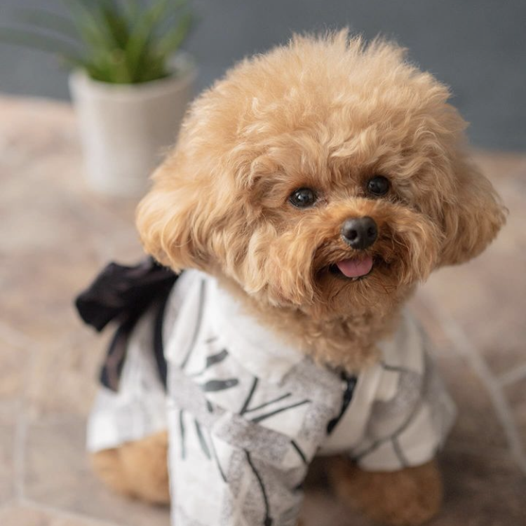

テディベアドッグのモコ
@ moco_the_teddy
とっても小さいトイプードル。飼い主さんを信頼しきっていて、のびのび過ごしているのが素敵！写真は雑誌のモデルをした時のもの。
リリガル
Lille and Garcello
@ lillie_bcl
ボーダーコリーの女の子リーリエとオーストラリアンシェパードの男の子ガルチェロ。聞き分けがよくて人間並みの頭脳を持ってる！
むぎ

@ mugi.mugi21
トイプードルの男の子。とってもおしゃべりで、あうあう喋っているのが可愛すぎる！バイバイ、アイラービューなど人の言葉しゃべっちゃう系わんこ。